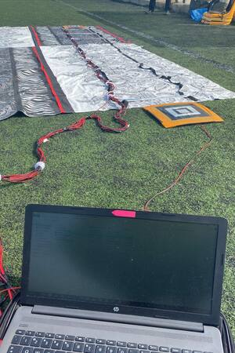
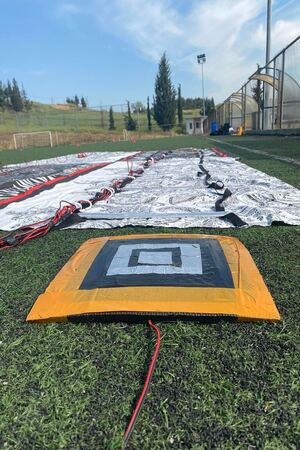

Δεν είναι απλά μία σκάλα προπόνησης, είναι...


Τί είναι η Smart Ladder.
Είναι μία βελτιωμένη σκάλα προπόνησης καθώς χρησιμοποιεί τεχνολογίες IoT. Πιο συγκεκριμένα, έχει ενσωματωμένους αισθητήρες οι οποίοι όχι μόνο ειδοποιούν τον αθλητή πως έκανε λάθος σε κάποιο σημείο της άσκησης αλλά εμφανίζει επίσης τα συνολικά του λάθη. Αυτή η ειδοποίηση πραγματοποιείται με ένα οπτικοακουστικό ερέθισμα καθώς ακούγεται ένας ήχος κάθε φορά που γίνεται κάποιο λάθος και αναβοσβήνουν ενσωματωμένα λαμπάκια. Τέλος, υπάρχει αυτοματοποιημένο χρονόμετρο το οποίο σταματάει και ξεκινάει στην αρχή και στο πέρας της άσκησης αντίστοιχα.
Τί παραπάνω προσφέρει η Smart Ladder.
Χάρη στα παραπάνω η Smart Ladder βοηθάει στην βελτίωση και στην απόδοση των αθλητών πολύ περισσότερο από μία απλή σκάλα προπόνησης σε διάφορους τομείς. Προσφέρει μεγαλύτερη ευκινησία, εκκρηκτικότητα, αρμονία και ακρίβεια στις κινήσεις καθώς επίσης βελτιώνει τον ρυθμό, την ταχύτητα, την σταθερότητα, την συγκέντρωση και την ελαστικότητα του αθλητή. Πρέπει να τονισθεί επίσης, πως βοηθάει και τον προπονητή στο κομμάτι καταμέτρησης των στατιστικών.